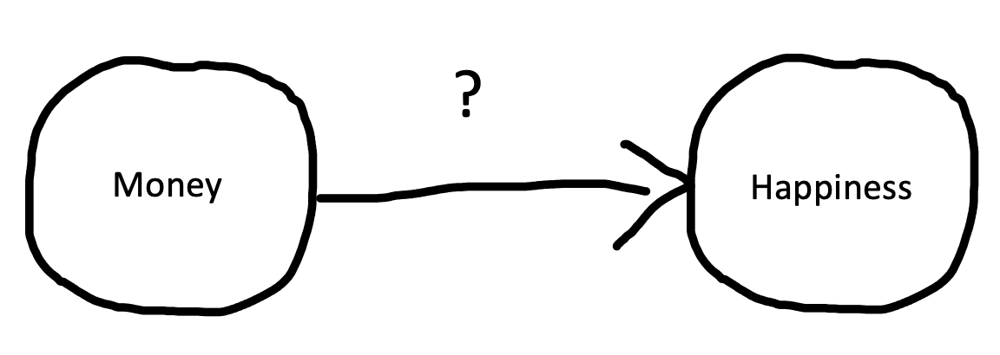
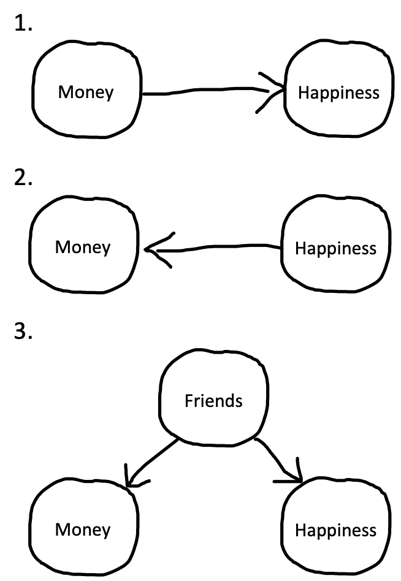
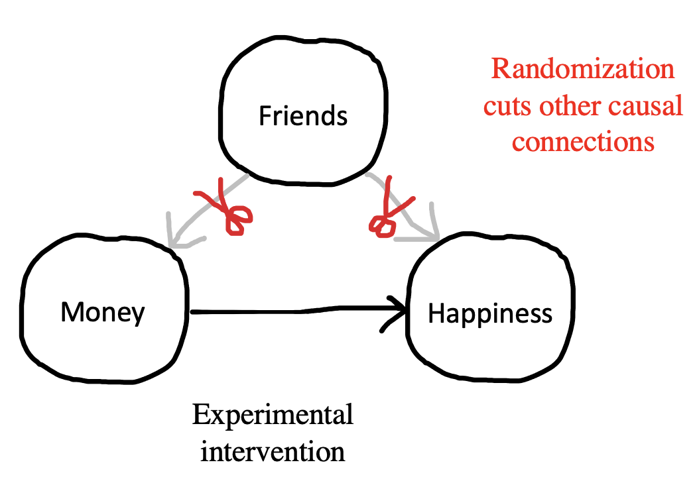

Chapter 1 Experiments
🍎 Learning goals
- Define “experiment”
- Reason about why researchers run experiments
- Analyze the role of randomization in experiments using a causal graphs framework
- Consider constraints on the generalizability of experiments
Welcome to Experimentology! This is a book all about the art of running experiments in psychology. Throughout, we will be guided by a simple mantra: that well-designed experiments help psychologists estimate causal effects in a maximally precise and unbiased manner. From this mantra, we’ll provide advice about how to navigate things like experimental design, measurement, sampling, and more. But before we jump in, let’s start with a fundamental question: why do we do experiments in the first place?
1.1 Questions about Causality
If you’re reading this book, there’s probably something about psychology you want to understand. How is it that we experience emotions like happiness and sadness? How is language developed and acquired? Why do humans sometimes work together and other times destroy one another? These are questions about causality—ones that people have pondered for centuries.2
As a simple example, consider the age-old question: does money cause people to be happier? This question can be visually conveyed using a tool called causal graphical models (Pearl, 1998). Figure (ref?)(fig:intro-money1) shows an example of such model: Money causes happiness because there is an arrow pointing from the former to the latter. Testing this question, though, is difficult to do without an experiment. For example, imagine that you went out into the world and merely surveyed peopled about how much money they make and how happy they are. (This is often called an observational study.) Imagine you then found that money and happiness were correlated: people with more money tended to be happier. Can you conclude that money causes increases in happiness? Not necessarily!
 Figure 1.1: The hypothesized causal effect of money on happiness.
“Correlation does not equal causation,” is a common saying in psychology. We repeat it time and time again because there are at least three reasons why two variables can be correlated (Figure (ref?)(fig:intro-money2)). In the previous example, one could indeed observe a correlation if money makes people happier. However, one would still observe that correlation if the opposite were true: if being happy causes people to make more money. Even more puzzling, it’s possible that there is a correlation but no causal relationship between money and happiness in either direction. Instead, a third variable—often referred to as a confound—may be causing increases in money and happiness to co-occur. For example, maybe having more friends causes people to both be happier and make more money. In this scenario, happiness and money would be correlated even though one does not cause the other.
To summarize, to understand things like happiness and despair, language and war, psychologists seek answers to questions about causality. Estimating these causal effects is difficult if we merely observe the world—so many of us turn to the power of experiments.
 Figure 1.2: Three reasons why money and happiness can be correlated.
1.2 How Experiments Help Us Answer Questions about Causality
Imagine that you (a) created an exact replica of this world, (b) gave everybody in the replica world $1,000, and then (c) found a few years later that they are happier than the people in the original world. In this scenario, you would have strong evidence that increases in money makes people happier. Why? Because you held everything constant besides the manipulated variable: money. This is the basic logic of experiments (Mill, 1859).
People are complicated, but experiments allow us to factor out the complexity by holding it constant. To demonstrate this, let’s first consider the problems that complexities pose for observational surveys. Earlier we mentioned that a confound—the number of friends—can make money and happiness correlated even if one does not cause the other. Unfortunately, this confound can continue to wreak havoc if money does causally increase happiness. In this scenario, it’s difficult to accurately estimate the effect of money on happiness because (a) people who have more money also tend to have more friends, and (b) people who have more friends tend to be happier.
Experiments allow us to ignore this complexity because they keep everything constant other than money. This means that the people who receive or do not receive money should be identical in every other respect, including number of friends. If happiness increases in one group, we know it must be driven by the only thing we allowed to vary: money. This is graphically conveyed in Figure (ref?)(fig:intro-money3), wherein experiments allows us to “snip away” the friend confound by holding it constant. But how do experimenters actually hold these things constant? Next, we’ll discuss one of the most simple strategies: randomization.
 Figure 1.3: Experiments allows us to “snip away” the friend confound by holding it constant.
1.3 Randomization
If you randomly split a large roomful of people into two groups, the groups will, on average, have a similar number of friends. Similarly, if you randomly pick who in your experiment gets to receive money, you will find that the money and no-money groups, on average, have a similar number of friends. In other words, through randomization, the confounding role of friends is controlled.
You may be wondering: why don’t we just ask people how many friends they have and use this information to split them into equal groups? You could do that, but this only allows you to control for the confounds you know of. For example, you may split people equally based on their number of friends but not their education attainment. If educational attainment impacts both money and happiness, you run back into issues with confounds. You may then try to split people by both their number of friends and education. But perhaps there’s another confound you’ve missed: sleep quality! This is where randomization really shines. If you randomly split a large group of people into groups, the groups will, on average, be equal in every way (Figure (ref?)(fig:intro-money4)).
 Figure 1.4: If you randomly split a large group of people into groups, the groups will, on average, be equal in every way.
Figure 1.4: If you randomly split a large group of people into groups, the groups will, on average, be equal in every way.
Randomization is a powerful tool, but there is a caveat: it doesn’t always work. On average, randomization will ensure that your money and no-money groups will be equal with respect to confounds like number of friends, education attainment, and sleep quality. But just as you can flip a coin and sometimes get heads 9 out of 10 times, sometimes you use randomization and still get more highly-educated people in one condition that the other. Nonetheless, randomization is a remarkably simple and effective way of holding everything constant besides a manipulated variable. In doing so, randomization allows experimental psychologists to make reasonable accurately estimates of causal relationships.
1.4 Generalizability
When we are asking questions about psychology, it’s important to think about who we are trying to study. Do we want to know if money increases happiness in all people? In people who live in materialistic societies? In people whose basic needs are not being met? We call the group we are trying to study our population-of-interest, and the people who actually participate in our experiment our sample.
People often forget the distinction between samples and populations. They may wish to make a conclusion about all people (their population-of-interest) but run their experiment with U.S. college students (their sample).3 This is not always a problem, but often times causal relationships are different for different populations. For example, in the early 2000’s, some researchers found that gratitude interventions—like writing about something nice somebody did for you—increased happiness in studies conducted in Western countries. Based on these findings, some psychologists believed that gratitude interventions could increase happiness in all people. But it seems they were wrong. A few years later, Layous et al. (2013) ran a gratitude experiment in two locations: the U.S. and South Korea. Surprisingly, the gratitude intervention decreased happiness in the South Korean sample—which they attributed to feelings of indebtedness that people in South Korea more prominently experienced when reflecting on gratitude.
In the previous example, we would say that the findings obtained with the U.S. sample do not generalize to people in South Korea. Unfortunately, these generalizability issues do not end with our sample of participants. For example, the way that researchers design their experimental manipulations can also limit the generalizability of their conclusion. For instance, giving somebody $1,000 cash may have a different effect on happiness than giving them a $1,000 gift card to a coffee shop located several towns over. Participants in both scenarios received the cash-equivalent of $1,000, but the way that this was done mattered. As we’ll see in Chapters (ref?)(models) and (ref?)(design), this issue has consequences for both our statistical analyses and our experimental designs (Yarkoni, 2020).
Questions of generalizability are pervasive, but the first step is to simply acknowledge and reason about them. For example, Simons et al. (2017) has argued that all papers should have a Constraints on Generality statement, wherein people discuss whether they expect their findings to generalize across different samples, experimental stimuli, procedures, and historical and temporal features. This idea reminds us experimenters to be humble: experiments are a powerful tool for understanding how the world works, but there are often limits to what they can teach us.
1.5 Experiments: Chapter summary
In this chapter, we defined an experiment as a combination of a manipulation and a measure. We discussed how, when combined with randomization, experiments allow us to make strong causal inferences about psychology. Nonetheless, we highlighted that there are limits to the power of experiments: that there are often constraints to the generalizability of the sample, experimental stimuli, procedure, and historical features. Nonetheless, one thing was hopefully clear: experiments are an extremely useful tool in the psychologist’s toolbelt.
Throughout the chapter, we relied on a relatively simple causal hypothesis: does money increase happiness. However, often in psychology, we seek to not just test simple hypotheses—but to build theories about how the world works. For example, we might want to build a theory that explains how social, cognitive, and physiological processes come together to shape peoples’ happiness. We’ll talk more about this theory building practice in Chapter 2.
Exercise 1.1 Imagine that you run a survey and find that people who spend more time playing violent video games tend to be more aggressive (i.e., that there is a positive correlation between violent video games and aggression). Following Figure 1.2, list three reasons why these variables may be correlated
Exercise 1.2 Imagine that you wanted to run an experiment that tests whether playing violent video games causes increases in aggression. What would be your manipulation and what would be your measure? How would you control for a potential confound, like age?
Exercise 1.3 Imagine that Dr. Brock O’Lee wanted to know if humans prefer vegetables over meat. He randomly assigns 30 U.S. pre-schoolers to be served either asparagus or chicken tenders and then asks them how much they enjoyed their meal. He finds that they enjoyed the meat more and subsequently writes a paper declaring that humans prefer meat over vegetables.
List some constraints on the generalizability of this study. Do you believe that results would differ if he sampled (a) a different age group, (b) a different world region, and (c) different vegetables and meats? Do you believe the results will differ in the same study is re-run in 50 years?
References
Defining causality is one of the trickiest and oldest problems in philosophy, and we won’t attempt to solve it here! But from a psychological perspective, we’re fond of D. Lewis (1973)’s “counterfactual” analysis of causality. On this view, the claim that, in some situation, if people hadn’t been given more money, they wouldn’t have experienced an increase in happiness.↩︎
Unfortunately, psychologists pervasively mistakenly assume that research on U.S. college samples generalizes to the rest of the world. To highlight this issue, Henrich et al. (2010) coined the acronym WEIRD. This catchy name describes the oddness of making generalizations about all of humanity from experiments on a sample that is quite unusual because it is Western, Educated, Industrialized, Rich, and Democratic. Henrich and colleagues argue that seemingly “fundamental” psychological like visual perception, spatial cognition, and social reasoning all differ pervasively across populations – hence, any generalization from an effect estimated with a WEIRD subpopulation is unwarranted.↩︎